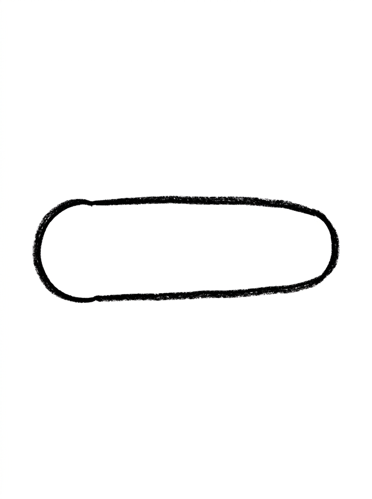
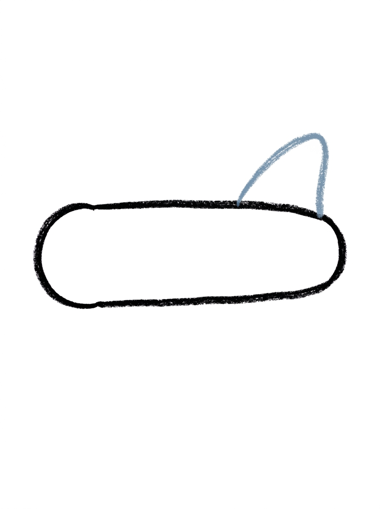
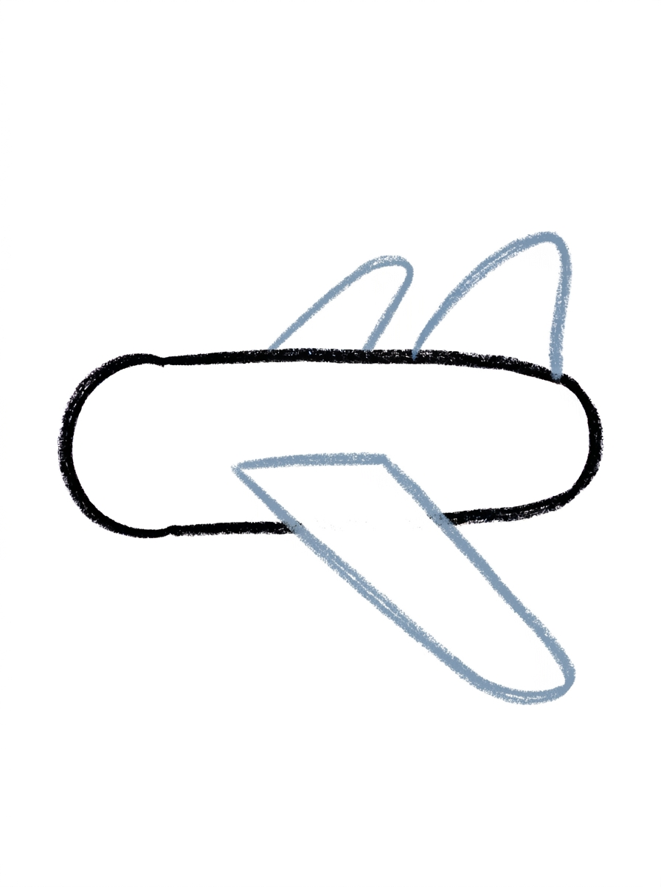
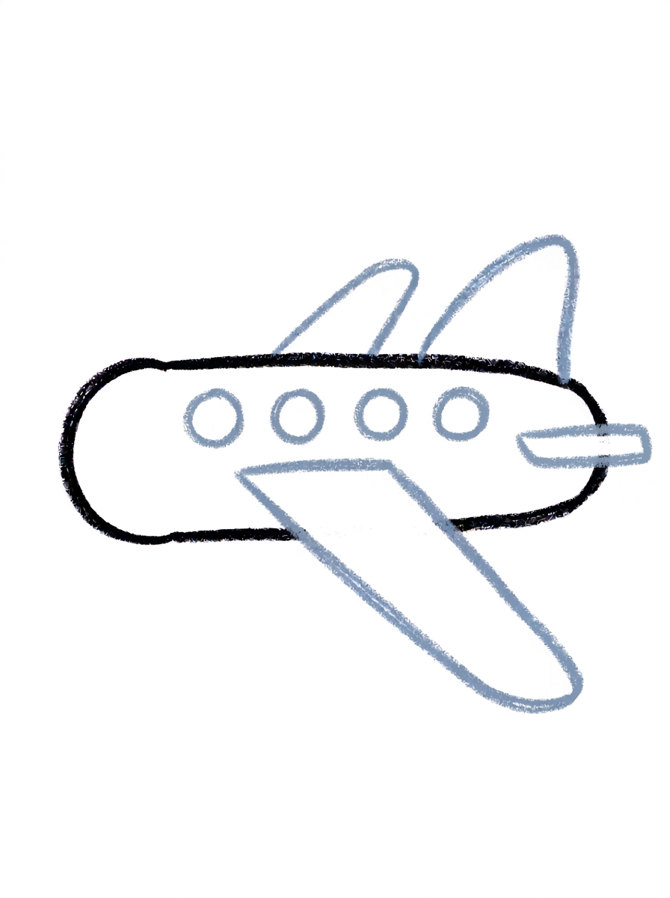
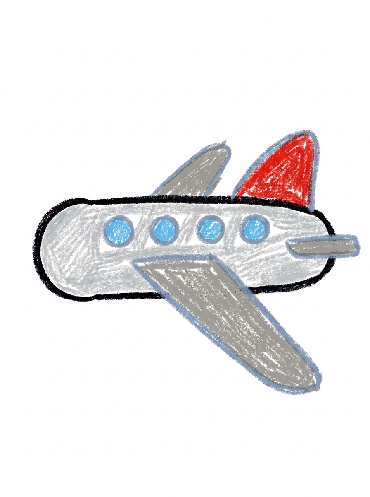

Airplane Drawing for Kids How to Draw An Airplane in 6 Easy Steps
Quick Answer
Draw an airplane in six easy steps: a long rounded body, a tail fin on top, one big wing underneath and a smaller one behind, four round windows, and a flat tail wing. Color it silver grey with a red fin. For ages 3 and up — free, no signup needed.
At a Glance
- Subject: How to draw an airplane
- Ages: 3+
- Steps: 6 steps
- Time: ~15 min
- Difficulty: Easy
- Supplies: Paper, crayons
Airplanes look tricky with all those wings, but this one is secretly simple — it's built from one long rounded body, a triangle fin, slanted bands for wings, and a row of circle windows. If your child can draw a long oval and a slant, they can draw this cool airplane.
✏️ Draw Your Airplane in 6 Easy Steps
One step per box — this step by step airplane drawing shows each new part in a different color so kids can see exactly what changed.
Step 1: The Body

Draw one long shape lying across the page, rounded at both ends and a little thicker at the front. That is the airplane's body.
Step 2: The Tail Fin

Draw one rounded triangle standing on top of the back end of the body. That is the tail fin.
Step 3: The Wings

Draw one long slanted band crossing under the middle of the body, sticking out below it — that is the near wing. Then draw a smaller slanted band behind the middle of the body, its tip poking up above the body's top line — that is the wing on the other side.
Step 4: The Windows
Draw four small circles in a row along the middle of the body. Those are the windows.
Step 5: The Back Wing

Draw one short flat band sticking straight out at the very back end of the body, below the tail fin — flat like a little shelf, not slanted like the big wing. That is the tail wing.
Step 6: Color It In

Color the body light silver grey and the wings medium grey. Make the tail fin bright red and the windows sky blue. Great drawing!
📊 Airplane Drawing by Age
Every age can join in — just adjust the job.
| Age | What they can do | Tip |
|---|---|---|
| 3-4 | Draw the long rounded body and color the finished airplane silver grey with a bright red tail fin. | Draw the body long and low across the middle of the page — the tail fin needs room to stand up at the back. |
| 4-5 | Add the rounded triangle tail fin, the big slanted wing underneath, and the row of four round windows. | Counting the four windows out loud as they go keeps them evenly spaced along the body. |
| 6+ | Finish all six steps, including the smaller far-side wing peeking above the body and the flat tail wing at the back. | The flat tail wing is the detail older kids love checking — flat like a shelf, not slanted like the big wing. |
🖨️ Download Your Free Airplane Drawing Printable
The printable lays out all 6 steps one per box, big enough for little hands — kids draw right alongside each step.
⬇️ Open Free Printable 🖨️ Print🎁 Free printable for ages 3+
✈️ Airplane Trip Page
Give your airplane a sky to fly through: draw puffy cloud bumps below it, a bright sun in one corner, and tiny birds in the distance, then decide together where this plane is going — to visit grandparents, to a beach with palm trees, or all the way to the moon. Write one sentence about the trip under the drawing (or dictate it for a grown-up to write) and the picture becomes the first page of a travel story your child can keep adding to.
What You'll Need to Draw An Airplane
All you need is a pencil, an eraser, and crayons or markers. For the colors in the tutorial, have light silver grey ready for the body, medium grey for the wings, bright red for the tail fin, and sky blue for the windows. Regular printer paper or a sketchbook both work.
What They're Learning
This tutorial practices long rounded shapes (the body), rounded triangles (the tail fin), slanted bands (the two main wings), and a straight row of small circles for the windows — great spacing practice. Kids also learn a real drawing idea: showing the far side of an object with a smaller shape peeking out, plus left-to-right sequencing from nose to tail.
Make It Yours
Try a rainbow airplane with a different color on every window, a jumbo cargo plane using the same steps with a longer fatter body, a night-flight version on dark paper with a white crayon and yellow windows, or a whole fleet of three planes in a row flying at different heights. Adding a banner behind the tail with your child's name turns it into a celebration picture.
🛒 Our Favorite Drawing Supplies
These are the supplies we reach for in our own home — washable (because kids), quality paper, and enough colors to avoid fights.
As an Amazon Associate, MomYouNeedThis earns from qualifying purchases — at no extra cost to you.
💡 Airplane Drawing Tips for Parents
Step 3 carries the most drawing: two wings in one step. Do the big near wing first — one long slanted band under the middle of the body — then the smaller far wing behind it, and remind your child that only its tip shows above the body. If both wings come out the same size, the plane still flies; the smaller tip is a bonus detail, not a pass-fail test.
The tail wing in step 5 is where kids most often copy the big wing's slant by habit. Point at the picture together first: flat like a shelf. A quick hand gesture — flat palm for the tail wing, tilted palm for the big wing — helps the difference stick better than words alone.
✈️ Airplanes in the Real World
The first airplane flight, by the Wright brothers in 1903, lasted twelve seconds and covered less ground than a modern jumbo jet is long. A little over a century later, airplanes cross whole oceans overnight. Wings and engines do the work: engines push the plane forward, and the wings' shape lifts it into the air as it speeds up.
The pilot sits in the cockpit at the very front, and the row of little windows down the side is where the passengers watch the world shrink. Ask your child where their plane is headed — a drawing of an airplane is always secretly a drawing of a trip.
✋ Warm-Up: Runway Lines and Window Rows
Warm up with the airplane's two favorite lines. First, long slanted lines corner to corner — runways, slides, falling rain — because the wings in this drawing sit at a slant. Then draw a row of small circles in a straight line, like windows down a fuselage. Keeping circles in a row is a quiet little challenge kids enjoy racing against.
If a slanted line wobbles, it still works: real runways have bumps, and crayon lines are allowed to look handmade. The one fix worth making is size — if the first wing swallows the page, start that wing again on the other side of the body where there is room.
📖 Give Your Airplane a Story
An airplane drawing asks one irresistible question: where is it going? Have your child name the destination and dictate a sentence for under the drawing — 'This plane is taking Grandma to the beach' beats any caption a grown-up invents. Bonus points for naming the airline and inventing its colors.
Every great trip has a way home, and the train tutorial covers the other half of travel. Drawing both gives your child a travel set: the fast way there and the slow, scenic way back. The sky is shared: draw the original flyers with how to draw a bird and how to draw an eagle.
❓ Airplane Drawing FAQs
What is the easiest way to draw an airplane?
Start with one long rounded shape for the body, then build on it one part at a time: a tail fin on top at the back, one big slanted wing underneath, a smaller wing peeking up behind, four round windows, and a flat little tail wing. The six steps turn a 'hard' airplane into shapes your child already knows.
What age is this airplane drawing for?
It's made for ages 3 and up. The shapes are all preschool-friendly — long ovals, triangles, and circles — and younger kids can do the body and coloring while older kids add the second wing and the tail wing themselves.
What supplies do we need?
A pencil, an eraser, paper, and crayons or markers. For colors you'll want light silver grey for the body, medium grey for the wings, bright red for the tail fin, and sky blue for the windows.
Is the printable really free?
Yes — every printable on MomYouNeedThis is 100% free, including this airplane drawing tutorial. There is no signup, no email, and no catch — just download, print, and draw.
How do I print it?
Open the PDF and choose Print, then set the scale to 100% (sometimes called Actual Size) so the steps print at full size. The tutorial is designed for regular US Letter paper, and plain printer paper works perfectly.
Why does the airplane have two wings in step 3?
A real airplane has a wing on each side, and so does this drawing. The near wing is the long slanted band crossing under the middle of the body; the far wing is the smaller slanted band behind it, with just its tip poking up above the body's top line. Drawing both is what makes the plane look real instead of flat.
How do I draw the tail wing?
The tail wing is the short flat band sticking straight out at the very back of the body, below the tail fin. Keep it flat like a little shelf — the slant belongs to the big wing in the middle, and that contrast is what makes the back of the plane read correctly.
How many windows does the airplane have?
Draw four small circles in a row along the middle of the body. Four is enough to read clearly as windows without crowding the body, and spacing them like beads on a string keeps the row tidy.
📚 Keep Exploring
- ✏️ All 76 Drawing Tutorials 76 free step-by-step drawing tutorials for kids.
- 🚗 Vehicle Coloring Free vehicle coloring pages for kids.
- ✏️ Drawing Practice Free printable drawing pre-writing worksheet for toddlers.